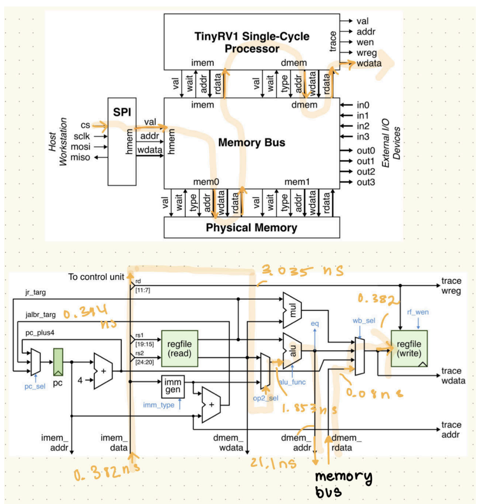
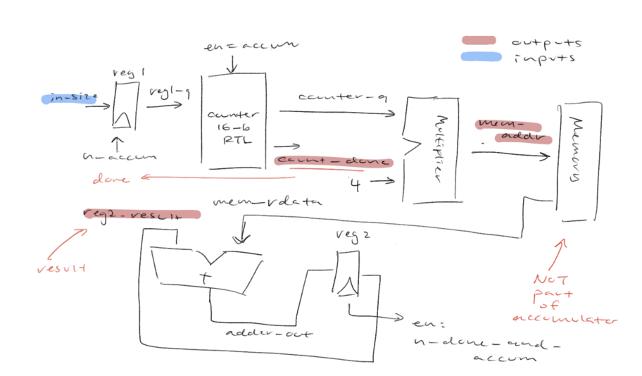
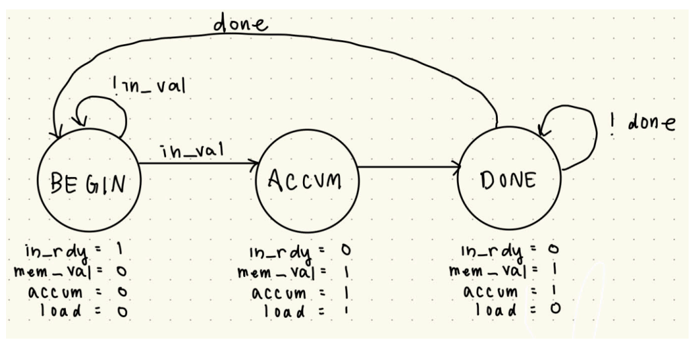
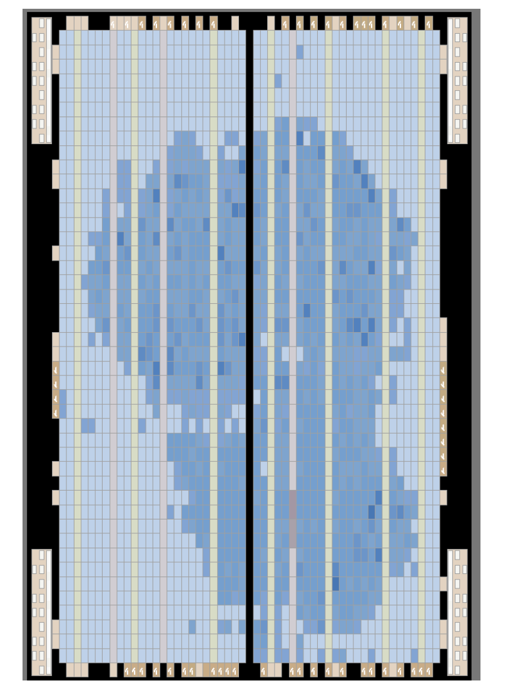
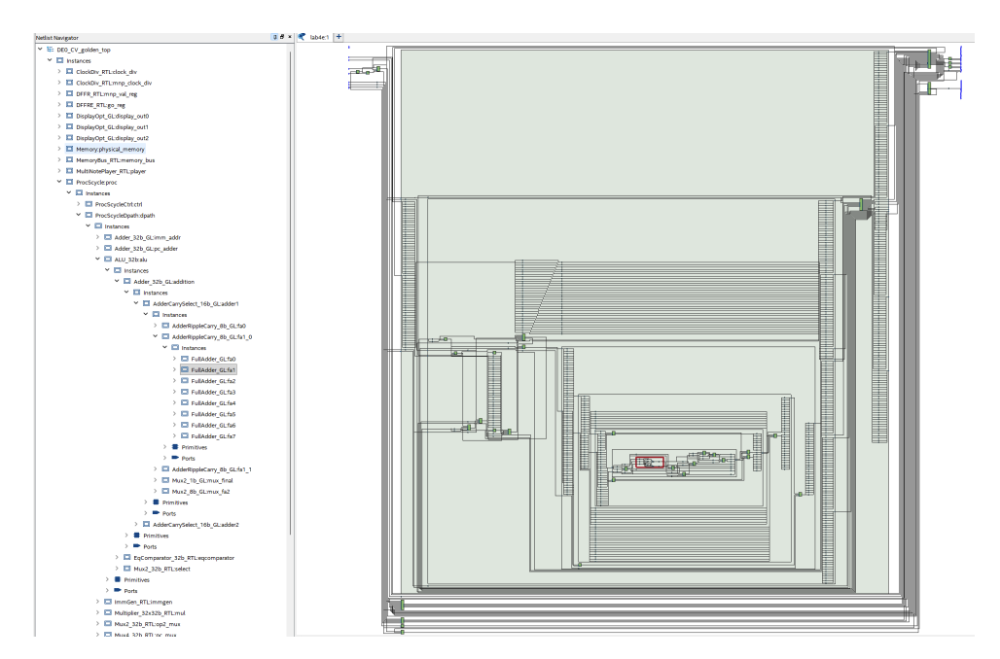
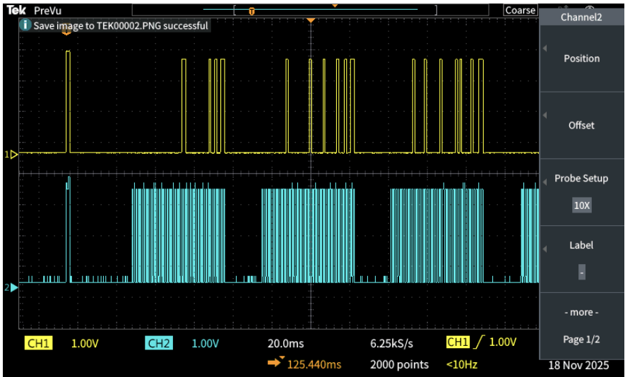
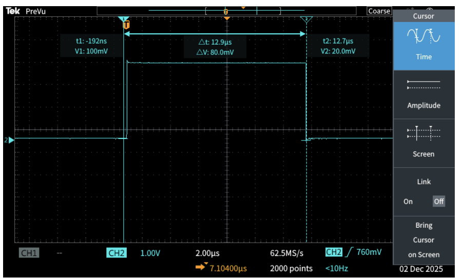

TinyRV1 Processor & FPGA Door Monitor
Overview
The capstone lab of ECE 2300: a full TinyRV1 RISC-V computer on a DE0-CV FPGA, which is composed of a single-cycle processor, a custom accumulate accelerator, and memory-mapped I/O, running real programs including a door monitor and an array-accumulate loop. It was a built up of multiple labs throughout the semester that built up to this rather complex project for someone who have never tested with Verilog and the concepts of computer engineering before.
A progression where each project built directly on the last: Lab 2 (a calculator) introduced combinational logic: an ALU, muxes, control signals. Lab 3 (a music player) added sequential logic, FSMs, and memory-mapped I/O. Lab 4 combined all of it into a full instruction set, register file, and datapath wired to real FPGA peripherals. The throughline was modularity: build small, verified pieces, then compose them into something larger, simplifying each piece rather than reinventing it.
System Architecture
Each datapath component (immediate generator, ALU, register file, PC logic, control signals) was built and verified individually against the instruction control-signal table before being wired into one datapath and control unit. That datapath connects to a memory bus arbitrating between an SPI loader (for programs sent from a host) and physical memory/I/O.

The critical path traces a load-word instruction through nearly the entire datapath in one cycle: control unit, ALU adder, memory bus, writeback mux, register file, matching lecture expectations for the most demanding instruction.
Accumulate Accelerator
A specialized accelerator sums an array of 32-bit values directly in hardware, no instructions required: a counter steps through indices, a multiplier converts them to byte addresses, and an adder/register hold the running sum.


A three-state FSM (BEGIN, ACCUM, DONE) keeps the valid/ready handshake clean: BEGIN latches the array size, ACCUM does one read+add per cycle, DONE holds the result until the next request.
Area & Timing
The processor used 6,244 ALMs / 9,072 ALUTs / 5,755 registers (~34% of the FPGA fabric), 20 to 30x larger than Lab 2 or Lab 3, the direct cost of generality (full ISA, 32-register file, branch/jump logic) versus single-purpose hardware.


Timing closed at 63.28ns against an 80ns constraint. Summing a 31-element array takes 159 cycles at 1 cycle/instruction, predicting 159 × 80ns = 12,720ns, matching the 12.7µs measured on the oscilloscope.
Testing & Results
Every stage was validated against hardware, not just simulation.


The accelerator's simulator produced the same 159-cycle count for a size-31 array as the processor's software loop (plus ~4 cycles for branch fall through/cleanup), confirming the hardware and software paths matched.
← Back to projects